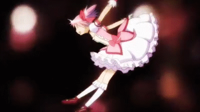
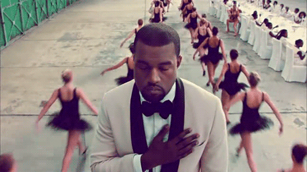

My Favorite Media
Home
About Me
Pictures of Sand Cats
Toggle Light/Dark Mode
Favorite Show: Madoka Magica

Favorite Game: MOTHER 3
Your browser does not support the video tag.
Favorite Album: My Beautiful Dark Twisted Fantasy
